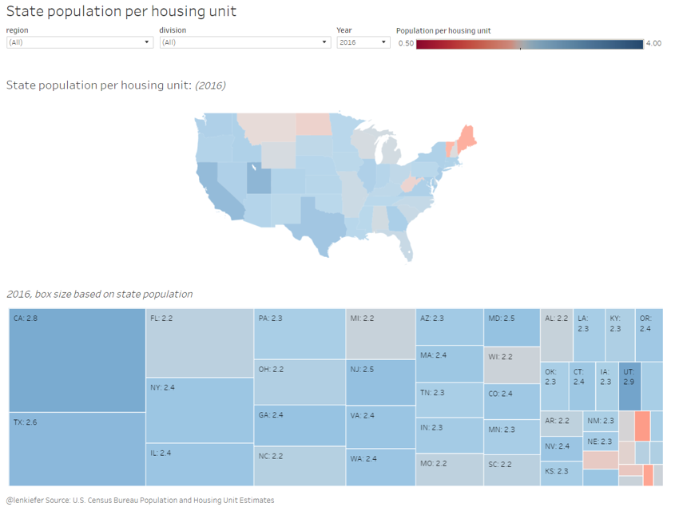
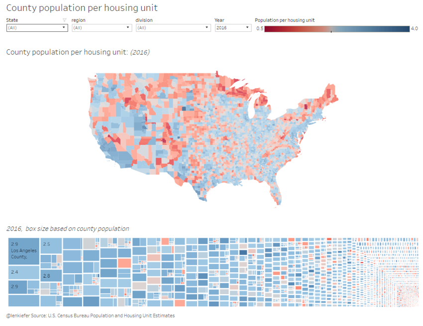
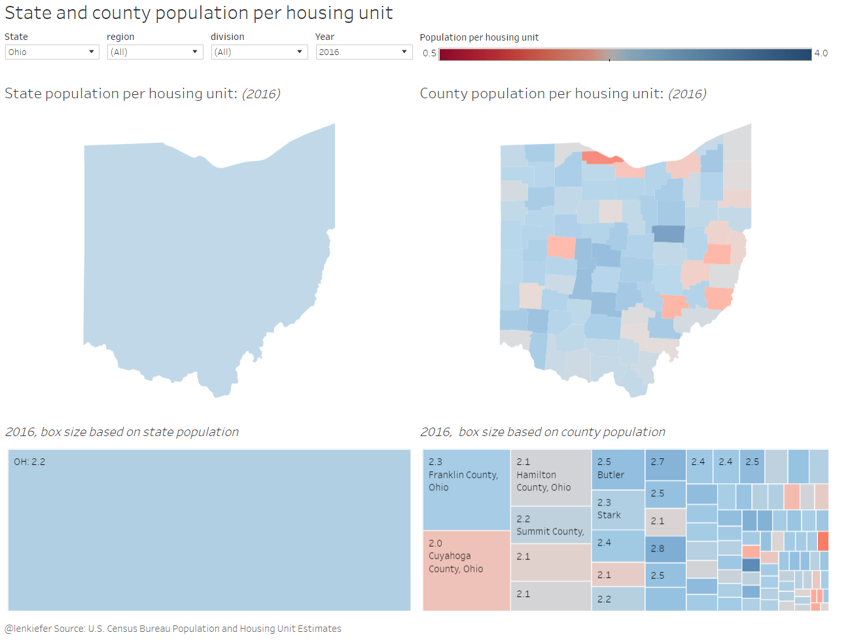
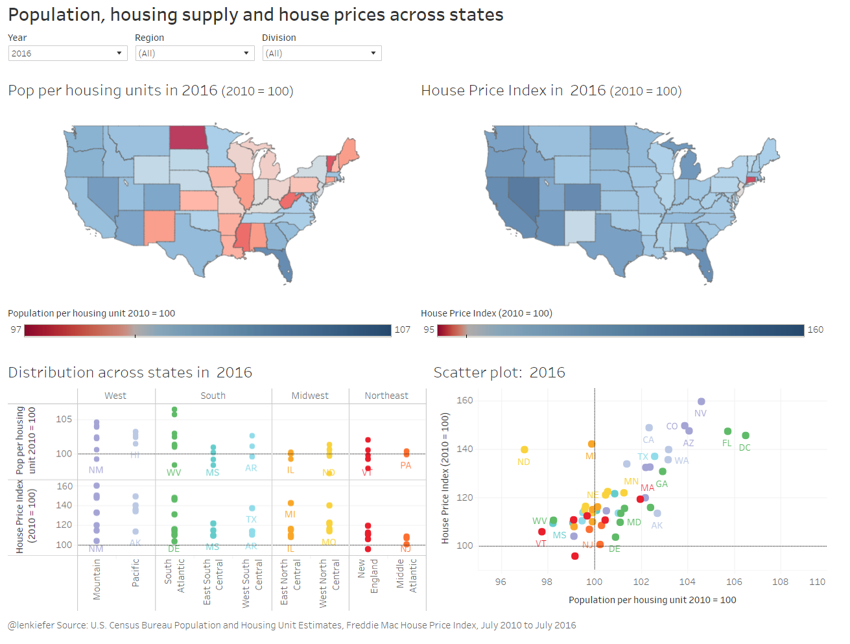
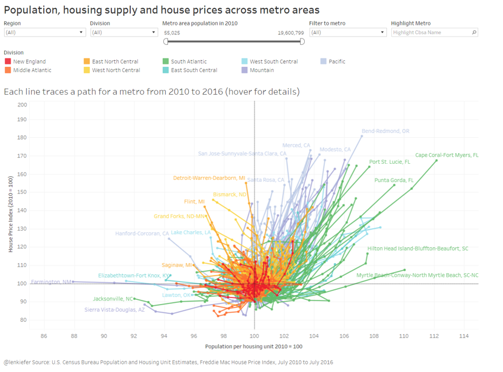
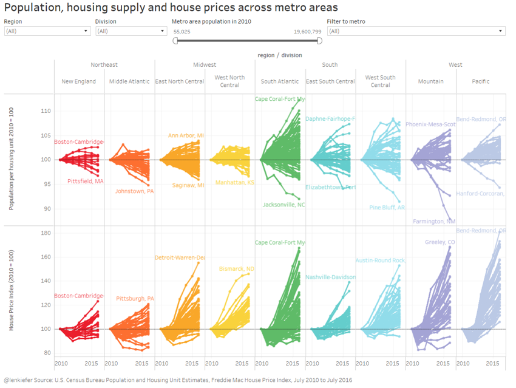

I MADE A LITTLE TABLEAU VISUALIZATION TO ANLAYZE TRENDS in population, housing supply and house prices.
If you like interactive dataviz, then the best thing might be to jump down below and explore. But I’ll frame the viz with a bit of discussion.
This post extends the analysis from last time looking at population, housing supply and house prices. Last time we restricted ourselves to national trends, but here we’ll dig into local trends.
Data
We will use the recently released Census data on population and housing units, as well as the Freddie Mac House Price Index.
Viz highlights
Here I will explain at a high level what the viz is showing.The viz is organized with a storyboard. The filmstrip at the top allows you to navigate between one of several dashboards containing related visualizations. The dashboards are:
- State pop per housing unit
- County pop per housing unit
- Compare state and county
- State pop/housing & house prices
- Metro pop/housing and house prices
- Metro history scatter/hairball
- Small multiple
- State history scatter/hairball
- Small multiple state
Let’s walk through them.
State pop per housing unit
We start by plotting the state population per housing unit in 2017.

This is a high level summary statistic telling us how many residents there are per housing unit in the state. The map is a choropleth and the treemap below plots the same data. It’s interesting to note that Utah and California have the highest population per housing unit. Utah is interesting, because the share of population under 20 is much higher than in California (lots of kids in Utah).
County pop per housing unit
Like above but for counties:

The state level data obscures a lot variation within states. I would be careful about reading too much into some of the smaller counties, but it is interesting to look within states. Generally, metro areas have much higher population per housing unit ratios than non-metro areas. Use the filters to see how your state looks.
Compare state and county
In the third dashboard you can compare state and county. By selecting the filter at the top, you can drill into a specific state, like Ohio.

Northeast Ohio, which has seen some large population declines tends to have low ratios. Population in cities like Youngstown has declined, while the housing stock has not fallen as much.
State pop/housing & house prices
The first three dashboards just give you some basic statistics. In the fourth dashboard we combien the population and housing unit data with house price data.

Here we see a pretty strong relationship between states where the population/housing unit has increases and where house prices are rising.
Metro pop/housing & house prices
Again the same, but for metro areas.
Metro history scatter/hairball
The hairball I am fond of, but it may take some explaining. First, take a look:

Each line represents a metro area, color coded by Census division (assigned to the metro by the primary state). The line joins each year from 2010 to 2016. All the metros are plotted relative to 2010, so they begin at (100,100). Then, based on how population/housing unit and house prices evolve the lines extend out, all tentacle like.
Small multiple
The hairball is in two dimensions so it might hard to follow. The small multiple tab plots the time series for the population per housing unit ratio and house prices by metro area.

Following an individual time series for population/housing unit or house prices, might be a bit easier if you can’t wrap your head around the hairball.
State history scatter/hairball/Small multiple state
The last two trace out the hairball and small multiple for states instead of metro areas.
The viz
Okay, enough talking. Check it out: